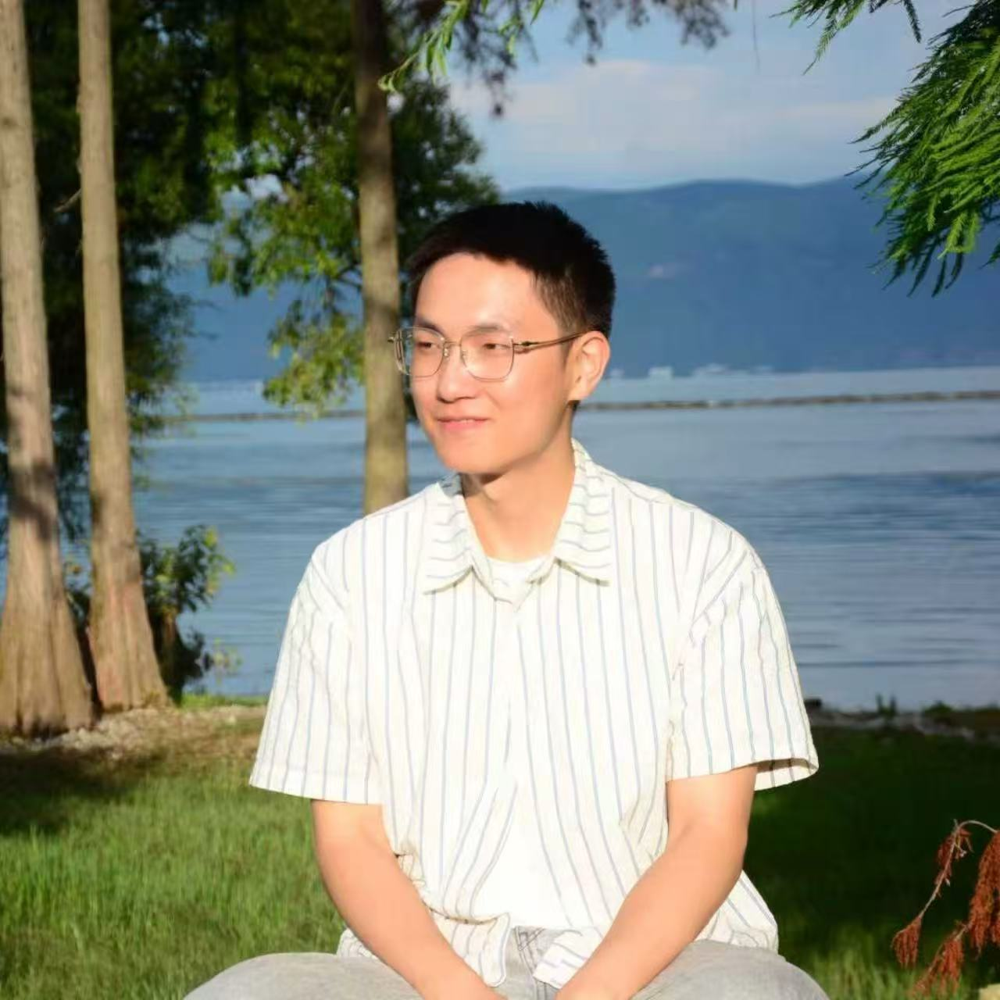

Liuyang Tan is a composer and Ph.D. student in music composition at UC Santa Barbara, studying with Professor João Pedro Oliveira. He holds an MFA in electronic music composition from Sichuan Conservatory of Music under Professor Minjie Lu, and a BA in recording arts from the same institution.
His research focuses on intermedia approaches to electronic music, exploring multichannel spatial narratives and the integration of sound with visual media. His works have been presented at the International Computer Music Conference (ICMC), Hangzhou International Electronic Music Festival (MUSICACOUSTICA-HANGZHOU), MA/IN Electronic Music Festival, Sound and Music Computing Conference (SMC), New York City Electroacoustic Music Festival (NYCEMF), Society for Electro-Acoustic Music in the United States (SEAMUS), ArteSicenza International Electronic Music Festival, China Computational Art Conference (CCF), Summit on Music Intelligence Electronic Music Marathon (SOMI), International Electronic Music Competition Shanghai (IEMC), Macao International Digital Intelligence Music Competition (MDIMC), and the Earth Day Art Model Global Marathon. He has received the China National Scholarship, Sichuan Conservatory Outstanding Graduate, and multiple academic scholarships.
谭浏洋，作曲家，现为加州大学圣塔芭芭拉分校（UC Santa Barbara）音乐作曲专业博士研究生，师从João Pedro Oliveira教授。硕士毕业于四川音乐学院电子音乐作曲专业，师从陆敏捷教授；本科毕业于四川音乐学院录音艺术专业。
作品曾多次入选国内外重要音乐节与学术会议并在比赛中获奖，包括国际计算机音乐大会（ICMC）、杭州国际电子音乐节（MUSICACOUSTICA-HANGZHOU）、MA/IN电子音乐节、国际声音与计算大会（SMC）、纽约城市电子音乐节（NYCEMF）、美国电子音乐协会（SEAMUS）、ArteSicenza国际电子音乐节、中国计算机艺术大会（CCF）、世界音乐人工智能大会电子音乐马拉松（SOMI）、上海国际电子音乐大赛（IEMC）、澳门数智融媒体音乐创作大赛（MDIMC）、“地球日”全球异地实时音乐节等。曾获国家奖学金、四川音乐学院优秀毕业生、学业一等奖学金等荣誉。